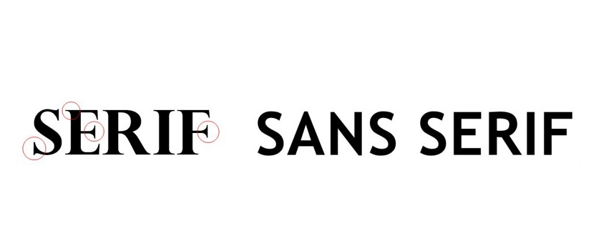
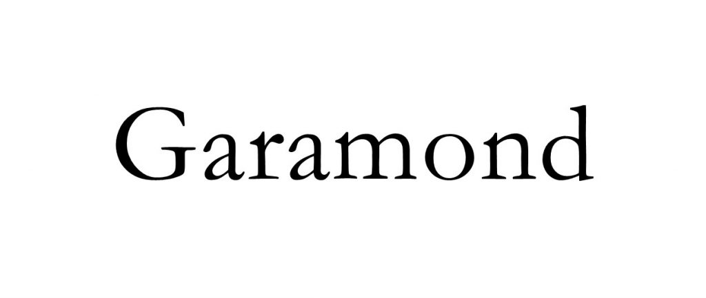
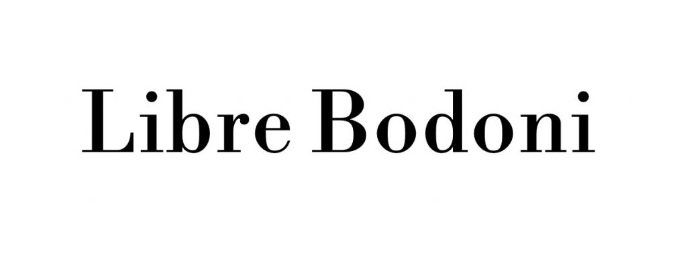
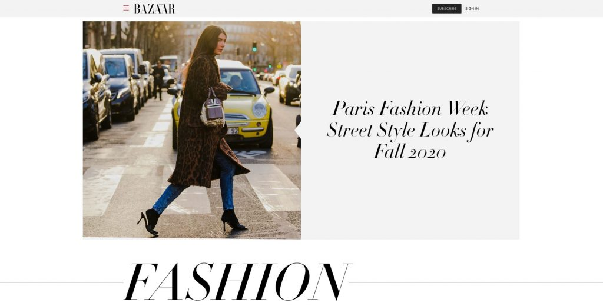
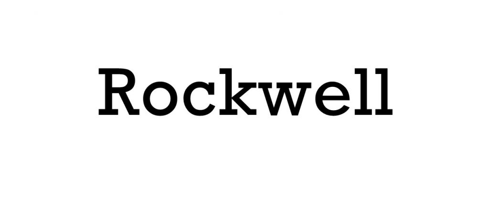
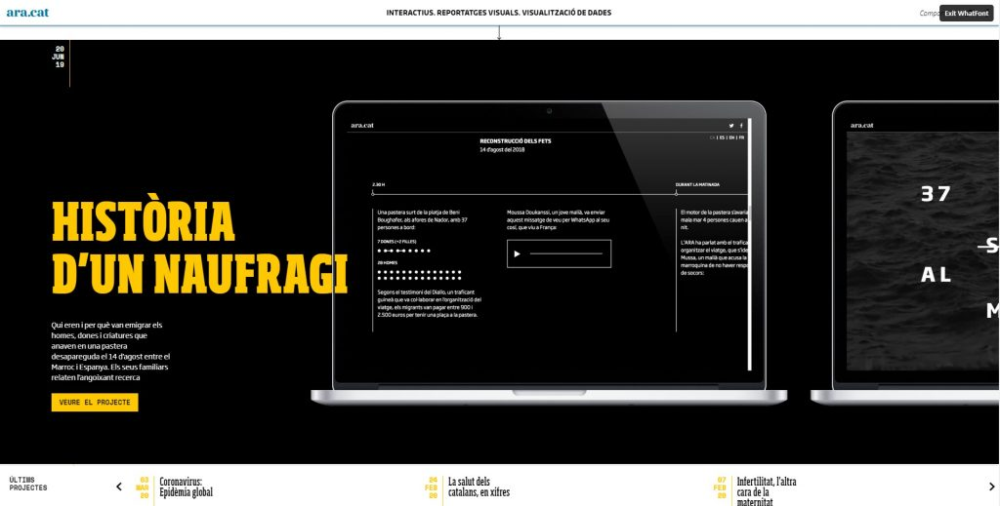

Although the exact number is not known, estimates tell us that there are more than half a million fonts in the world.
Although most of these fonts are based on a few of the most popular fonts, and then these are just variations, there is still a very large number of fonts that look great and can be used in a variety of ways.
This is all great but this font diversity leaves us with a huge dilemma: which fonts do we choose and use for our web design? Do we go for decorative fonts or modern ones? Or do we choose the bold variant over the light one?
The choices are pretty much infinite and because of this, it is easy to choose the wrong type of font and get a really bad design.
That is why it is necessary to know as many different types of fonts as possible and which to use for the best possible results.
We will tell you more about the four main types of fonts, different styles, typeface classification, and many other things that will be very useful to you.
In this article you will read about:
So let’s get started!
Different styles of fonts
Before we start talking about different types, you should know that there is something called the anatomy of fonts.
All fonts have something called a baseline and the fonts “sit” on it. There is also something called a mean line. All fonts “exist” between those two lines, and what is below or above is called ascender and descender.
Ascender is when part of the lowercase letter goes above the mean line, while descender is when part of the lowercase letter is positioned below the baseline.
These elements are something that every font has in common. What sets the fonts apart are the shape, thickness, height, and much more, which actually classifies the fonts into different groups.
Overall we can say that the most basic distinction between fonts is the difference between serif and sans serif fonts.
Sans serif looks very simple, while serif font looks decorative. Certain parts on the serif font that look like ornamentals and are called “serifs” do not exist on sans serif, which actually means “without serifs”. That is the key difference between them.
There are many subcategories within serif and sans serif fonts as well as a few more types we will talk about in the next paragraph.
What are four main types of fonts?
There are four main types of fonts that you will encounter often and most fonts are just variations of one of these four types.
By some classifications, there are five main types of fonts, and that depends on whether weak serif fonts count as a separate type or just a subcategory of serif fonts.
We agree with a classification that states that there are 4 main types of fonts, and these are, in addition to the already mentioned serif and sans serif fonts, script fonts, and display fonts.
Let’s learn more about them and mention some of the most famous variations on these 4 main types.
- Serif fonts
- Sans serif fonts
- Script fonts
- Display fonts
Serif fonts
The reason for this font being first on our list is because it is the oldest font type.
It originated from Roman carvings, and there are two theories why the Romans had serifs on their letters.
The first one states that, during the process of carving the letters into stone, the stone carvers unavoidably created the serifs while following the outlines of the letters.
The second theory suggests that the use of serifs was deliberate and that they were used to neaten the ends of lines.
Whichever the case, letters with serifs became the default and were used for centuries, so when Gutenberg devised the movable type printing press, the books were printed in letters with serifs.
Because of their origin, serif fonts are associated with the old and traditional, but this doesn’t mean they’re not used anymore.
There are 4 types of serif fonts that have their own separate uses and variants, so let’s take a look:
- Old-style serif fonts
- Transitional serif fonts
- Didone serif fonts
- Slab serif fonts
Old-style serif fonts
This serif font style originated in 1465, shortly after Gutenberg invented the movable type printing press.
Old-style serif fonts were inspired by the Renaissance and had great readability on the rough paper that they were printed on back then.
Let’s look at an old-style serif font:
These fonts are characterized by a small difference between thick and thin lines, as well as curves that connect the serifs to the strokes.
Other old-time serif fonts include Bembo, Bookerly, Cartier, Callisto, Gentium, Palatino, Requiem, and many others.
Nowadays, they’re rarely used in web design, but they have found their use in printing, book covers, and movie posters. Penguin Books, Oxford University Press, Cambridge University Press, the National Gallery, and many others use Bembo as their body typeface.
Fun fact: The Requiem font is most often used for credits in movies and TV shows.
Transitional serif fonts
These fonts are also referred to as baroque fonts and became widely used mid-18th century. They got their name because they present a mix of old-time and more modern fonts. Times New Roman is a type of transitional font:

The difference between thick and thin lines is more obvious, and many of them have more round serifs (as opposed to strokes) and a more vertical axis.
Other transitional fonts include Baskerville, Georgia, Bookman, Cambria, Perpetua, and others. They’re still very much used, here’s a website of a developer and designer that uses the Times New Roman font:
Didone serif fonts
Didone is a more modern version of the serif fonts and it first appeared in the late 18th century. These fonts were immediately a huge hit and could be found everywhere.
The designers of the first Didone fonts, the printers Firmin Didot, Giambattista Bodoni, and Justus Erich Walbaum, wanted more elegant fonts that would show the more refined printing techniques. Here’s an example of a Didone font:
It looks pretty modern, doesn’t it? And how sharp do those serifs look? Compared to the previous two serif types, this one is sleeker and looks neater and more trimmed.
Didone fonts are characterized by narrow serifs that have a constant width, thick vertical strokes of letters, and a strong contrast between the horizontal and vertical parts of letters.
Out of the four serif types, the Didone fonts are used the most in web design.
The Didone fonts are usually associated with fashion, but they can be found everywhere. Here’s a mattress company’s website that uses a unique Didone font:
Slab serif fonts
The slab serif fonts appeared during the early 19th century. Their purpose was to grab attention, hence their main characteristic: thick and bold serifs. Here’s Rockwell, a slab serif with a geometric design and consistent line thickness:
In the past few years, their use significantly increased, probably because of their bold and clean design. They used to be everywhere: from magazine and book covers, brand logos, and web design. Their use is not that common lately.
There’s a website that uses the Soho slab serif font for both the title and the body text:
